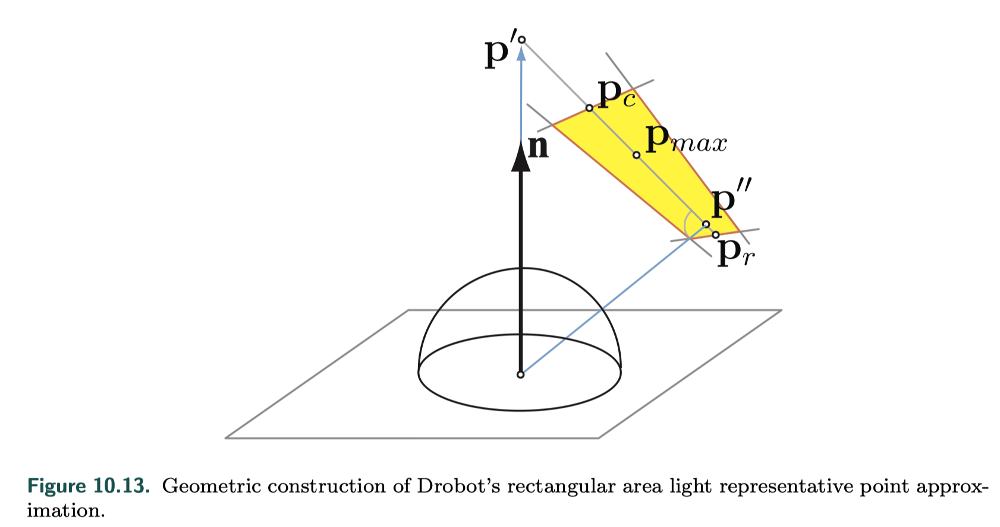
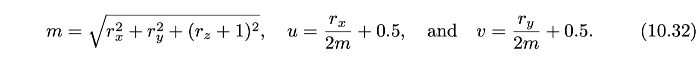
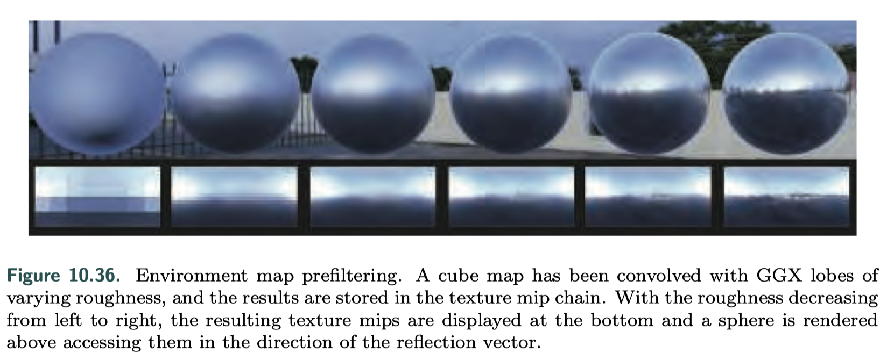

Real-Time Local Illumination Summary
- Background
- Area Light Sources
- Environment Lighting
- Spherical and Hemispherical Functions
- Environment Mapping
- Specular Image-Based Lighting
- Irradiance Environment Mapping
- Sources of Error
Background
- In reality, lighting is never punctual.
- The sky is an important source of light, caused by sunlight scattering from the atmosphere.
- In order to form a more realistic lighting model, we need to integrate the BRDF response over the full hemisphere of incident directions on the surface.
- In offline rendering, usually averaging multiple samples(rays)
- In real-time rendering, we will need to approximate the light emitter, the BRDF, or both.
{kind=link}
Area Light Sources
- Vector Radiance
- Wrap Lighting
Glossy Materials
uniformly emitting spherical area lights and arbitrary glossy BRDFsMittring’s roughness modification
- Mittring, Martin, “The Technology Behind the ‘Unreal Engine 4 Elemental Demo’,” Game Developers Conference, Mar. 2012.
- Approximate the convolution between the light source and the material BRDF by finding a new BRDF lobe, of a different roughness, that has a corresponding cone whose solid angle is equal to the sum of the light lobe angle and the material one.
- roughness clamp cause artifacts
{kind=link}
{kind=link}
Representative Point Technique
- Represent the area illumination’s source with a light direction that changes based on the point being shaded
- These approaches resemble the idea of importance sampling in Monte Carlo integration, where we numerically compute the value of a definite integral by averaging samples over the integration domain. In order to do so more efficiently, we can try to prioritize samples that have a large contribution to the overall average.
- mean value theorem of definite integrals
{kind=link}
{kind=link}
General Light Shapes
tube lights (capsules)
{kind=link}
card lights
- Drobot, Michal, “Physically Based Area Lights,” in Wolfgang Engel, ed., GPU Pro 5, CRC Press, pp. 67–100, 2014. Cited on p. 116, 388
- representative point solution 
{kind=link}
{kind=link}
planar polygonal area lights
- Heitz, Eric, Jonathan Dupuy, Stephen Hill, and David Neubelt, “Real-Time Polygonal-Light Shading with Linearly Transformed Cosines,” ACM Transactions on Graphics (SIGGRAPH 2016), vol. 35, no. 4, pp. 41:1–41:8, July 2016. Cited on p. 390
- key idea of LTC 把不同的BRDF和simple cosine BRDF做转换
{kind=link}
{kind=link}
Environment Lighting
Methods to integrate radiance defined by a varying function over all the possible incoming directions.
Ambient Light
{kind=link}
Spherical and Hemispherical Functions
- spherical bases
- properties in a given basis
Simple Tabulated Forms
- pick several directions and store a value for each
- encode many different spherical functions with arbitrarily low error by adding more samples as needed
- samples to choose
{kind=link}
{kind=link}
Spherical Bases
Basic Ideas
- ways to project (encode) functions onto representations that use a fixed number of values (coefficients)
- basic example
{kind=link}
{kind=link}
{kind=link}
{kind=link}
Spherical Radial Basis Functions
- radially symmetric makes the function only one argument
- a set of functions called lobes spread across the sphere
- projection and reconstruction
Spherical Gaussians
- definition
- A proper basis is obtained only when we choose a fixed set of lobes (directions and spreads), so that the entire domain is well covered, and perform projection by fitting only the weights w_k.
- The optimization problem is formulated as ordinary least-squares optimization.
- production and integration
- anisotropic spherical guassians

{kind=link}
{kind=link}
{kind=link}
Spherical Harmonics
- Spherical harmonics (SH) are an orthogonal set of basis functions over the sphere.
- orthogonal means that the inner product of any two different functions from the set is zero
- projection

- A function space has an infinite number of dimensions, so a finite number of basis functions can never perfectly represent it.
- frequency bands
- integral In this spectral domain, the integral of the product of two functions is equal to the dot product of the coefficients of the function projections.
{kind=link}
{kind=link}
Other Spherical Representations
- linearly transformed cosines
- spherical wavelets
Hemispherical Bases
- half of the signal
- the BRDF, the incoming radiance, and the irradiance arriving at given point of an object
Ambient/Highlight/Direction (AHD) Basis
- a constant ambient light ---- ambient direction and color
- a single directional light that approximates the irradiance in the “highlight” direction ---- highlight direction
- the direction where most of the incoming light is concentrated ----- incoming direction and color
- projection
- Precomputed Lighting in Call of Duty: Infinite Warfare,” SIGGRAPH Advances in Real-Time Rendering in Games course, Aug. 2017
- signal is first projected to spherical harmonics, and the optimal linear direction is used to orient the cosine lobe
Radiosity Normal Mapping/Half-Life 2 Basis
{kind=link}
- represents hemispherical functions on surfaces by sampling three directions in tangent space
- projection and reconstruction
{kind=link}
Hemispherical Harmonics(HSH)/H-Basis
- Zernike polynomials
- H-basis
- Habel, Ralf, and Michael Wimmer, “Efficient Irradiance Normal Mapping,” in Proceedings of the 2010 ACM SIGGRAPH Symposium on Interactive 3D Graphics and Games
- take part of the spherical harmonic basis for the longitudinal parameterization and parts of the HSH for the latitudinal one
Environment Mapping
Definition
- Recording a spherical function in one or more images is called environment mapping, as we typically use texture mapping to implement the lookups in the table.
- How well we can integrate environment lighting with given materials.
- A variety of projector functions that map the reflected view vector into one or more textures.
Reflection mapping
{kind=link}
{kind=link}
Mapping
Latitude-Longitude Mapping
- spherical coordinates ( ρ , φ ). Here φ , equivalent to the longitude, varies from 0 to 2π radians, and ρ , the latitude, varies from 0 to π radians.
- problem
- the density of information is nowhere near uniform
- the areas near the poles receive many more texels than those near the equator
- result in artifacts when employing hardware texture filtering especially visible at the two pole singularities
- transcendental functions such as arccosine are costly on GPUs
{kind=link}
{kind=link}
Sphere Mapping
{kind=link}
{kind=link}
- in sphere map's space, view vector is always (0, 0, 1)
- maps each reflected view direction to a point on the two-dimensional image of this sphere
- derive the surface normal(view space) on the sphere, which will then yield the (u, v) parameters needed to access the sphere map 
- much simpler to compute
- one singularity located around the edge of the image circle
- valid for only a single view direction
{kind=link}
{kind=link}
Cube Mapping
{kind=link}
- created by projecting the environment onto the sides of a cube positioned with its center at the camera’s location
- its projection is implemented directly in hardware on modern GPUs
- view-independent
- much more uniform sampling characteristics
- modern GPUs can now correctly perform this filtering across edges
Other Projections
- dual paraboloid environment mapping
- more uniform texel sampling of the environment compared to the sphere map and the cube map
- take care for proper sampling and interpolation at the seam between the two projections which is expensive
- Octahedral(八面体) mapping
- projection
Given a reflection direction r

- no filtering issues as the seams of the parameterization correspond with the edges of the texture used
- projection
Given a reflection direction r
- Radially-Symmetric Reflection Maps
- a simple factorization using a single one-dimensional texture storing the radiance values along any meridian line from the symmetry axis
{kind=link}
{kind=link}
Specular Image-Based Lighting
Ideas
- blurring the environment map texture to simulate surface roughness
- consider the shape a BRDF function
at least five dimensions of input values (roughness and two polar angles each for the view and normal directions) that control the resulting lobe shape

- indexed with the reflected view vector which contain radiance values
{kind=link}
Prefiltered Environment Mapping
 To accommodate for different roughness levels, it is common to employ the mipmaps of an environment cube map. Each level is used to store blurred versions of the incoming radiance, with higher mip levels storing rougher surfaces.
{kind=link}
Convolving the Environment Map
{kind=link}
Split-Integral Approximation for Microfacet BRDFs
- many techniques have been developed to lessen the BRDF approximation issues inherent in cube map prefiltering
- split-integral approximation
- the first depends only on surface roughness and the reflection vector, with the assumption of a radial symmetric D lobe
- in practice, we can use any lobe, imposing n = v = r
- the second integral is the hemispherical-directional reflectance of the specular term
- depends on the elevation angle θ, roughness α, and Fresnel term F (F0)
- the first depends only on surface roughness and the reflection vector, with the assumption of a radial symmetric D lobe
{kind=link}
{kind=link}
{kind=link}
Asymmetric and Anisotropic Lobes
- uses a single sample, but tries to find the best lobe to approximate the BRDF in the current view direction instead of relying on a constant correction factor
- better simulates surfaces at grazing angles
- averages several samples from different lobes
- include the stretched highlights typical of half-vector models
Irradiance Environment Mapping
- indexed with just the surface normal n, and they contain irradiance values
- for each texel in the map, we need to sum up the cosine-weighted contributions of all illumination affecting a surface facing in a given normal direction
- stored and accessed separately from the specular environment or reflection map, usually in a view-independent representation such as a cube map

{kind=link}
Spherical Harmonics Irradiance
- cause irradiance from environment lighting is smooth
- convolving radiance with a cosine lobe results in the removal of all the high-frequency components from the environment map
- an accuracy of about 1% with just the first nine SH coefficients (each coefficient is an RGB vector, so we need to store 27 floating point numbers)
- SH projection
- dynamic light sources can be added into an existing SH irradiance environment map
{kind=link}
Other Representations
- many irradiance environment maps have two dominant colors: a sky color on the top and a ground color on the bottom
- hemisphere lighting model
- a faster approximation
- wavelet representations
{kind=link}
{kind=link}
Sources of Error
- employing a mix of techniques for lighting means that we are working with approximations BRDF model that have varying degrees of error
- make sure that the discrepancies between different forms of lighting are not evident
- occlusions are also of key importance for realistic rendering, as light “leaking” where there should be none is often more noticeable than not having light where it should be
- assume infinitely distant radiance sources, ones that are never possible
- assume the lights emit radiance uniformly over the outgoing hemisphere for each point on their surface